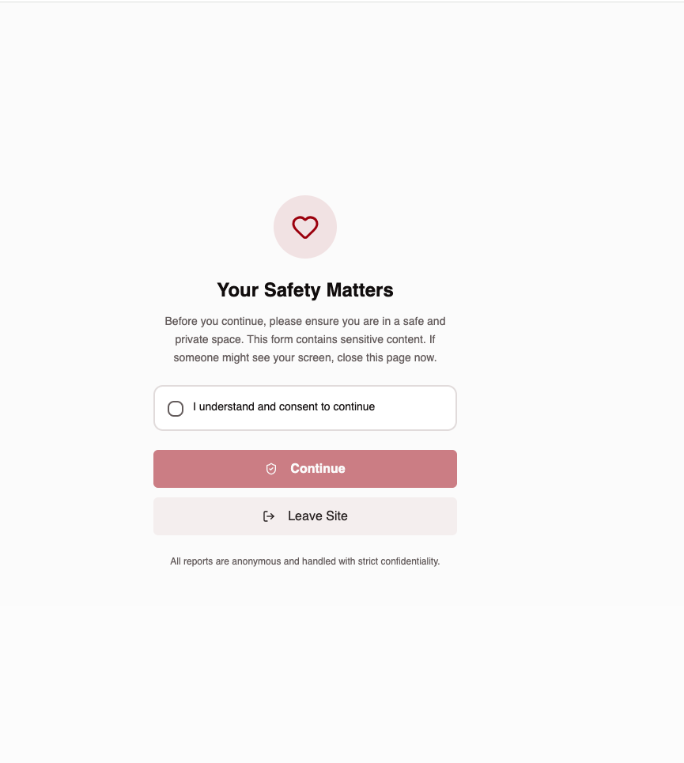
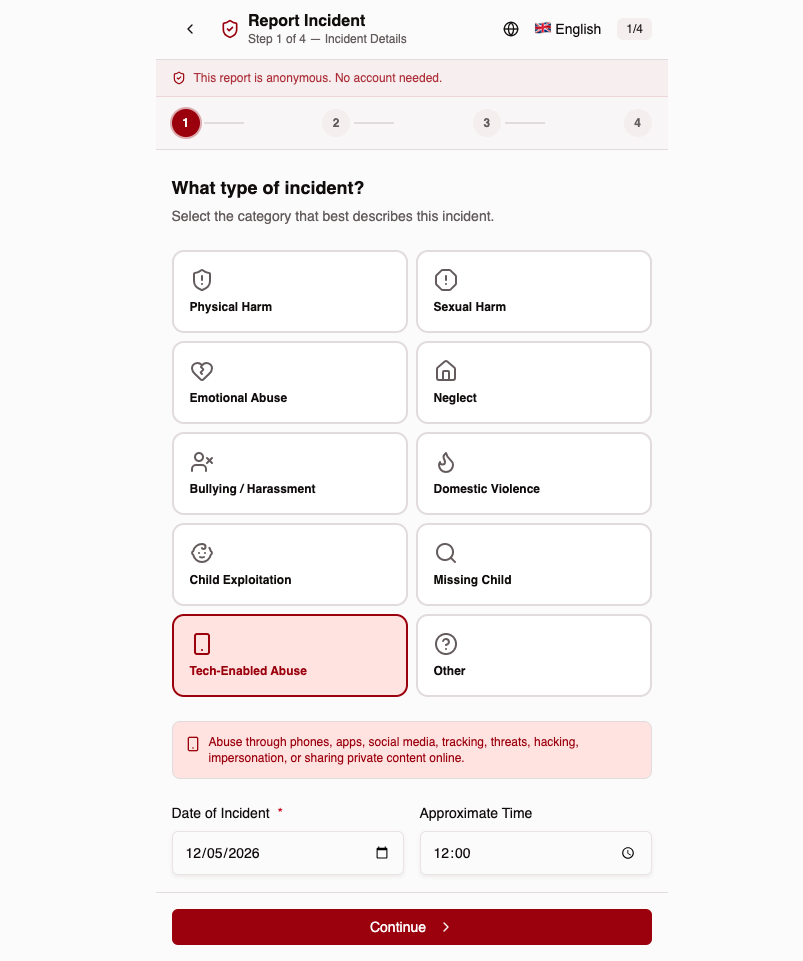
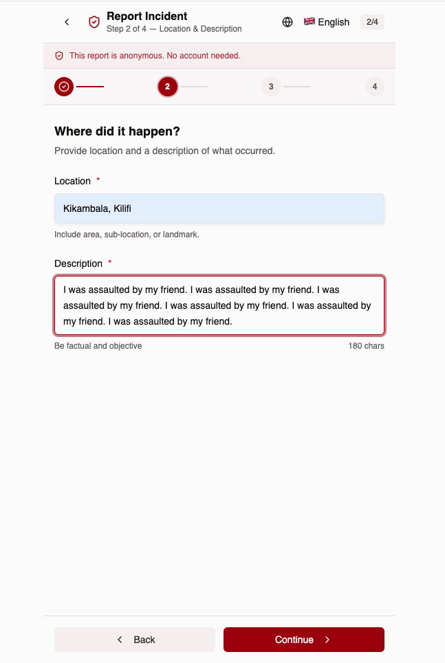
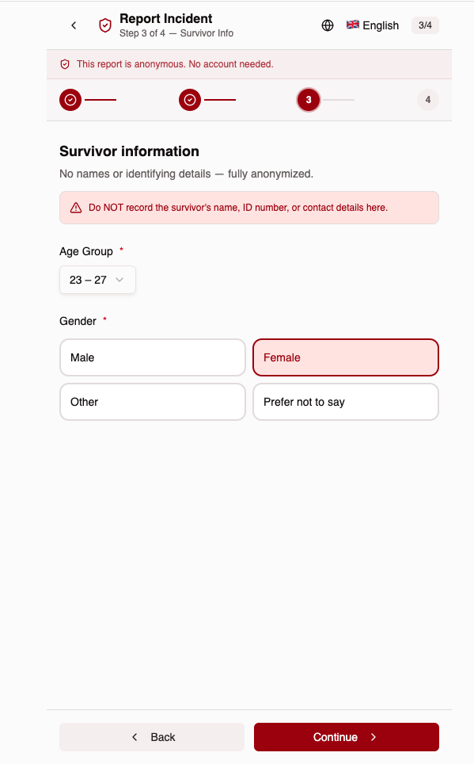
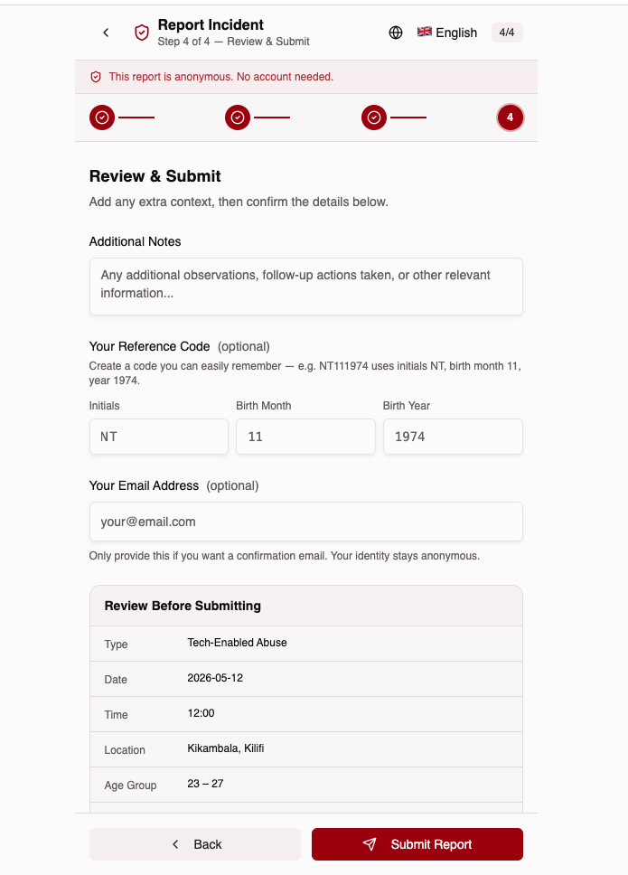
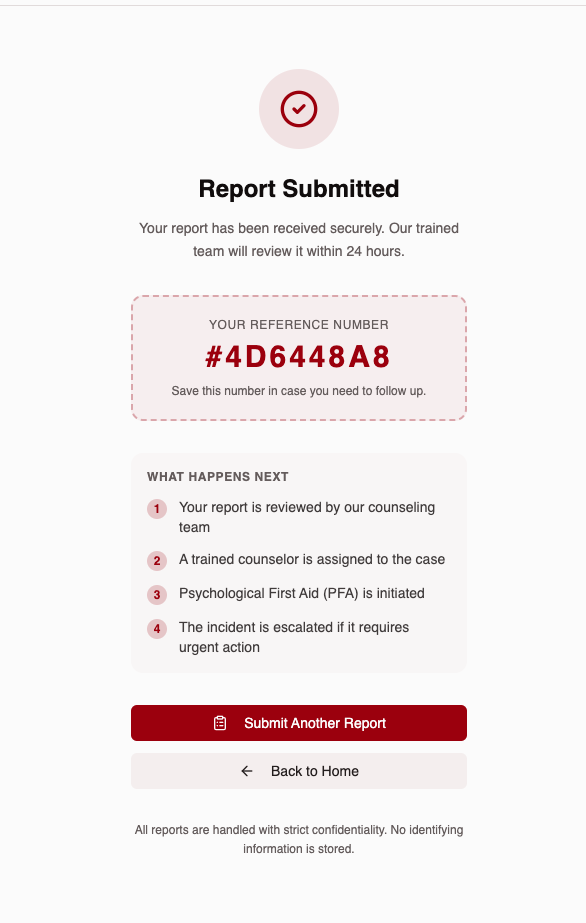

Interactive User Journey Guide
Mandatory consent screen — "Your Safety Matters" — before accessing the form. PWA install prompt appears here and on any step of the incident tracker or Find Help experience.

Consent checkbox required. "Leave Site" button exits immediately for survivor safety.
Select reporter type: Self (Survivor), On Behalf of Survivor, or Volunteer. If volunteer, enter unique Volunteer ID (e.g. MARY-KM-001) to track reports to their profile.
Three options: Self (survivor), On Behalf (relative/friend), Volunteer (field worker with unique ID). No account required.
Tap-friendly icon grid with 10 incident categories. Date and time fields below.

Physical, Sexual, Emotional, Neglect, Bullying, Domestic Violence, Child Exploitation, Missing Child, Tech-Enabled Abuse, Other.
Where it happened and a factual description of the incident.

Free-text location — area, sub-location, or landmark. 180-char description limit.
Age group and gender only — no names or identifying details collected.

Warning banner: "Do NOT record the survivor's name, ID number, or contact details."
Summary of all entered details before final submission. Reporter type shown. Self/on-behalf reporters get optional reference code; volunteers see their Volunteer ID instead.

Self/on-behalf: initials + birth month + year (e.g. NT111974). Volunteer: unique Volunteer ID (e.g. MARY-KM-001) replaces the reference code.
Confirmation screen with unique reference ID and next-steps guide.

Review → Assign counselor → PFA initiated → Escalate if urgent. All within 24 hours.